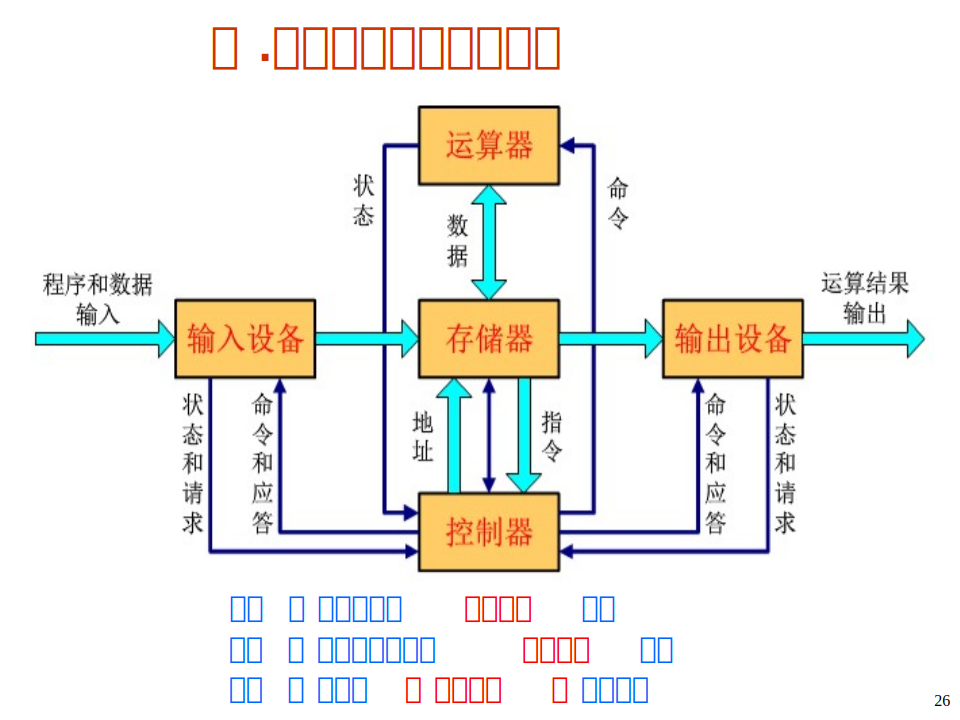

计算机系统概述
本文最后更新于：June 2, 2022 pm
Chapter 1: Computer System Overview
计算机的发展历程
-
第一代计算机: 真空管计算机，1940中期~1950后期。ENICA是第一台计算机有18000多个真空管，十进制表示和运算。采用手动编程，通过设置开关和插拔连线实现。
-
第二代计算机: 晶体管计算机，1950后期~1960初期。逻辑元件采用晶体管，内存由磁芯构成，外存为磁鼓和磁带。可进行浮点运算，采用了中央交换结构(非总线结构)。可使用高级语言编程，提供了系统软件。代表机为IBM 7094和DEC PDP-1。
-
第三代计算机: 中小规模集成电路计算机，1960中期~1970中期。逻辑元件和主存均由集成电路实现。特点为微程序控制、具有cache结构、虚拟存储器和流水线等。代表机为IBM 360和DEC PDP-8。
-
IBM 360引入了兼容机的概念:
- 相同的或相似的指令集
- 相同的或相似的操作系统
- 原来机器上的程序可以不改动而在新机器上运行，但性能不同。
-
DEC PDP-8采用了总线结构:
- 具有高度的灵活性
- 允许将模块化的功能部件插入总线
-
-
第四代计算机: 大规模/超大规模计算机，1970初期~今天。微处理器和半导体存储器技术发展迅猛，微型计算机出现(PC)。采用半导体作为存储器。微处理器把CPU所有元件放在一块芯片。特点: 共享存储器和分布式存储器及大规模并行处理系统。代表机有争议。
冯诺依曼机
1945年冯诺依曼提出存储程序(Stored-Program)思想: 将事先编好的程序和原始数据送入主存中；启动执行后，在不需操作人员干预下，自动完成逐条取出指令和执行指令的任务。
计算机应由运算器、控制器、存储器、输入设备和输出设备五个基本部件组成。
- 存储器: 不仅能存放数据，而且也能存放指令，形式上两者没有区别，但计算机应能区分数据还是指令。
- 控制器: 控制器应能自动执行指令。
- 运算器: 运算器应能进行加/减/乘/除四种基本算术运算，并且也能进行一些逻辑运算和附加运算。
- 输入和输出设备: 操作人员可以通过输入设备和输出设备与主机进行通信。
内部以二进制数表示指令和数据。每条指令由操作码和地址码两部分组成。操作码指出操作的类型，地址码指出操作数的地址。
采用存储程序工作方式。
计算机系统的基本组成
计算机的定义: 计算机是一种能对数字化信息进行自动、高速的算术和逻辑运算的处理装置。
计算机的基本部件和功能:
- 运算器(数据运算): ALU、GPRs、标志寄存器等。
- 存储器(数据存储): 存储阵列、地址译码器、读写控制电路。
- 总线(数据传送): 数据线(MDR)、地址线(MAR)、控制线。
- 控制器(控制): 对指令译码产生控制信号。

几乎现代所有的通用计算机都采用冯诺依曼架构，因此IAS(Institue for Advance Study at Princeton,IAS普林斯顿高等研究院)计算机是现代计算机的原型机。
- CPU: 中央处理器
- ALU: 算术逻辑部件
- PC: 程序计数器
- IR: 指令寄存器
- GPRs: 通用寄存器组
- MAR: 存储器地址寄存器
- MDR: 存储器数据寄存器
在程序起始地址送入PC后，计算机能自动取出一条一条指令进行执行，在执行过程中无需人的干预。
计算机系统的层次结构
软件和硬件都是计算机使用中不可或缺的部分，软件通过使用硬件来得到结果，硬件根据软件的使用方法来计算结果，而软件和硬件的沟通就是通过ISA(Instruction Set Architecture, 指令集体系结构)来进行的。
软件
软件按照用途可以分为两大类型: 系统软件和应用软件。
- 应用软件: 根据具体场景完成具体问题的软件。如信息管理系统、网页浏览软件等
- 系统软件: 为应用软件的编写提供资源，使硬件资源被有效利用。
- 操作系统: 实现硬件资源管理，用户接口，系统调度等功能。
- 语言处理系统: 翻译程序+Linker+Debug等，即高级语言的基础。
- 汇编程序: 将汇编语言编写的程序翻译为机器码。
- 编译程序: 将高级语言程序编译为汇编语言程序或直接编译为机器码。
- 解释程序: 将高级语言逐句翻译为机器码且立即执行，不生成目标文件。
- 实用程序: 如磁盘碎片整理程序、备份程序等。
不同层级语言之间的转换
- 第一代程序设计语言: 程序员直接编写机器码，将程序起始地址放入PC即可直接执行。
- 第二代程序设计语言: 使用汇编语言编写程序，经过汇编程序翻译后得到机器码，再将程序起始地址放入PC即可直接执行。
- 第三代程序设计语言: 使用过程式高级语言(如C语言)，程序员编写高级语言代码，经过编译语言(编译器)编译后得到汇编语言程序，再通过汇编程序翻译为机器码才能执行。
- 第四代程序设计语言: 非过程类语言(如面向对象型语言,C++)，与第三代语言类似，均需要通过编译程序和汇编程序转换为机器码才能执行。
指令系统
ISA是一种规约(Specification)，它规定了如何使用硬件。
规定包括:
- 可执行的指令的集合，包括指令格式、操作种类以及每种操作对应的操作数的相应规定。
- 指令可以接受的操作数的类型。
- 操作数所能存放的寄存器组的结构，包括每个寄存器的名称、编号、长度和用途。
- 操作数所能存放的存储空间的大小和编址方式。
- 操作数在存储空间存放时按照大端还是小端方式存放。
- 指令获取操作数的方式，即寻址方式。
- 指令执行过程的控制方式，包括程序计数器、条件码定义等。
不同ISA规定的指令集不同，如，IA-32、MIPS、ARM、RISC-V等。计算机组成必须能够实现ISA规定的功能即硬件必须要能够满足ISA要求的功能。同一种ISA也可以有不同的计算机组成，只要硬件抽象的功能能够满足ISA的需求。
计算机系统性能评价
衡量计算机性能的基本指标:
- 响应时间(Respone Time): 指从作业提交开始到作业完成所用的时间
- 吞吐率(Throughput): 指单位时间内所完成的工作量(在有些场合下也被称为带宽)
计算机性能测量:
-
指令执行速度(MIPS、MFLOPS/TFLOPS/PFLOPS):
- MIPS指每秒执行多少百万条指令(定点数指令), MIPS= 时钟频率/ (CPI x )。因为不同指令执行时间不同，所以MIPS总是一个平均值。
- MFLOPS: 每秒能执行的浮点运算有多少百万次，反映机器对浮点数处理的速度。注意: MFLOPS不是用执行浮点数指令数来描述
-
基准程序(Benchmark): 基准测试程序是专门用来进行性能评价的一组程序。不同用户使用的计算机用不同的基准程序，通过运行实际负载来反映计算机的性能，最好的基准程序是用户实际使用的程序或典型的简单程序。基准程序中最好包含编译器，避免编译器所产生的特殊作用!
通常把用户感觉到的执行时间分成以下两个时间:
- CPU时间: 指CPU真正花在执行该程序的时间。
- 系统CPU时间: 为了执行用户程序而需要运行操作系统程序的时间
- 用户CPU时间: 用来运行用户代码的时间
- 其他时间: 等待I/O操作完成或CPU花在其他用户程序的时间
CPI(Cycles Per Instruction): 指每条指令所花费的时钟周期数。
- 对于某一条特定的指令，其CPI是一个确定的值。
- 对于某一个程序或一台机器，其CPI是一个平均值，表示该程序或该机器指令集中一条指令执行时平均需要多少个时钟周期。
CPI = CPU时钟周期数 指令条数
用户CPU时间 = CPU时钟周期数 时钟周期 = CPU时钟周期数 时钟频率 = CPI 指令数 时钟周期
但单靠CPI不能反映CPU性能。如单周期CPU的CPI=1，但性能差。
本博客所有文章除特别声明外，均采用 CC BY-SA 4.0 协议 ，转载请注明出处！